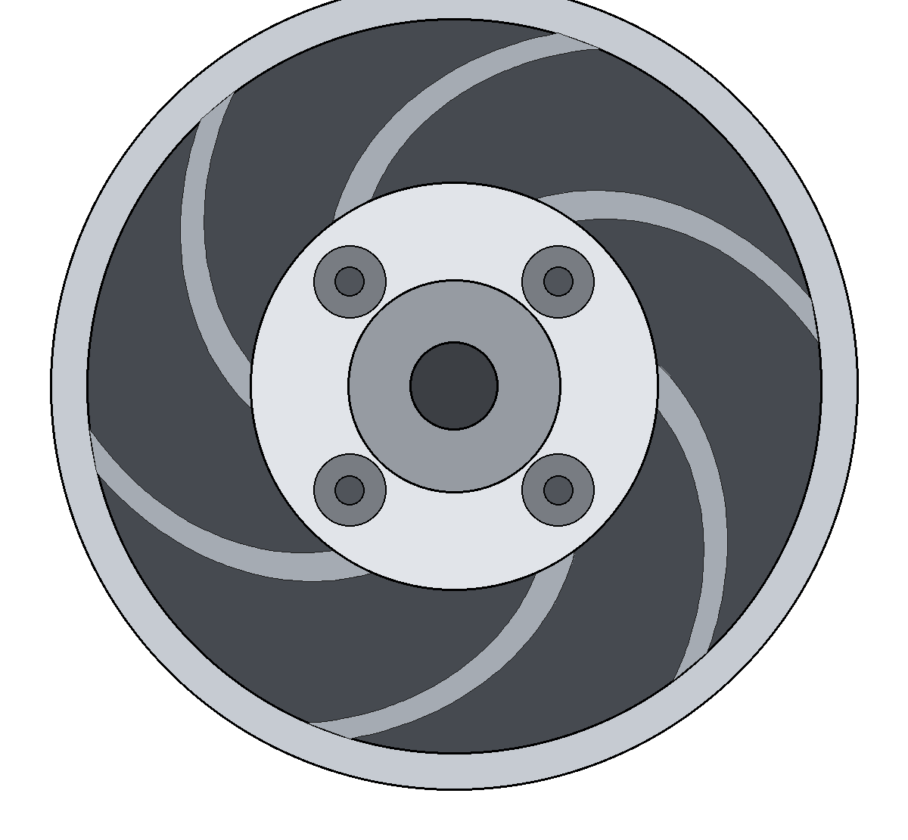
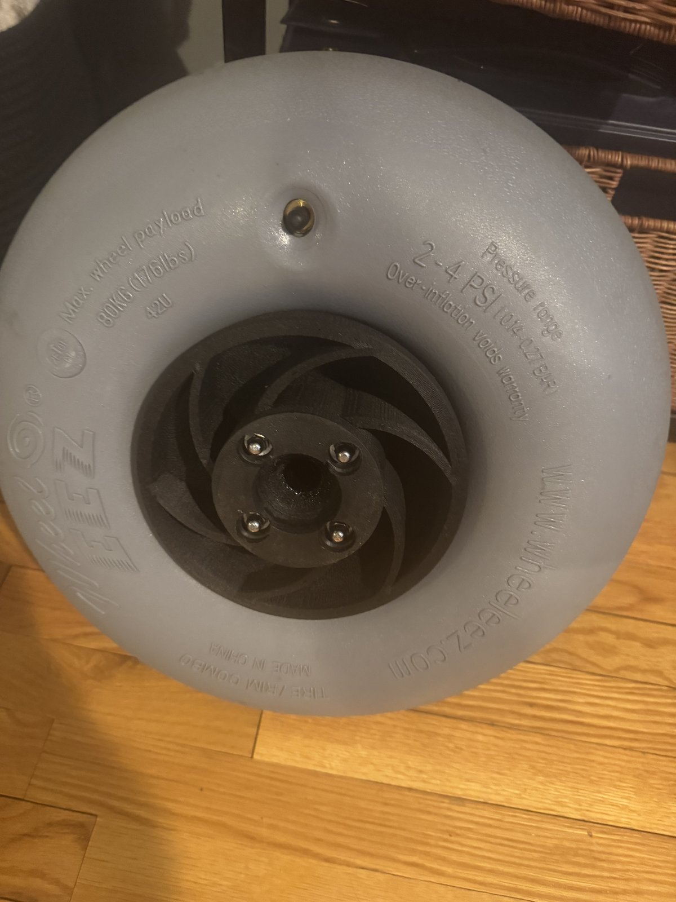

Auto-Cart: it follows you
It began with a familiar problem: a mountain of beach gear and soft sand. The answer became a full engineering project — a welded aluminum cart on balloon tires. Then a wearable UWB tag and four corner receivers so the cart drives itself, while a 360° scanner steers it around people and stops it at curbs.
Seen it on TikTok? That’s this cart. Watch the follow-me video →
More films — the full build story and how the follow-me system works — on YouTube → @KMJDynamics
Follow-me
A wearable UWB tag and four corner receivers fix your position; the cart drives itself to you, hands-free.
Sees & avoids
A 360° scanner steers it around people and stops it at curbs and drop-offs.
Manual RC
Flip the switch on the remote and take over instantly.
Built for sand
Balloon tires and a welded aluminum frame float over loose sand instead of digging in.
Under the hood
Built to survive its own motors
After a voltage spike destroyed the main computer, the power system was re-engineered: distributed, surge-protected supplies.
Smooth, not lurching
Closed-loop speed control — predictable motion that eases in and out of power, even loaded.
No maps, no GPS
A wearable beacon fixes the operator. A 360° scanner flows the cart around obstacles in real time.
Watch it from a phone
Voltage, current, and charge state on a private dashboard — from across the beach or across the country.
Wheel hubs
The stock hubs developed play under motor torque. Each hub now prints as two identical halves in carbon-fiber nylon that lock into one solid body.


The KMJ Dynamics way
An independent shop with no blueprint handed down. Welded frames, custom power electronics, and autonomy code all come off the same bench — driven by one habit: keep building until the idea works in the real world.
Want it bolt by bolt? Get the Build Guide →